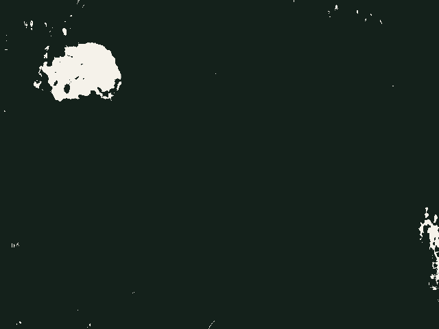
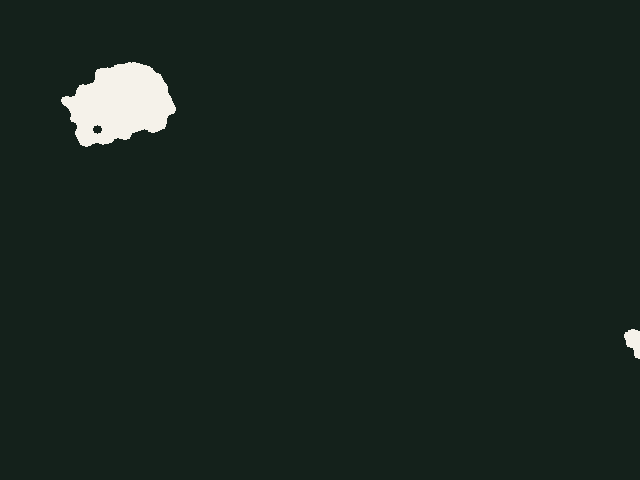
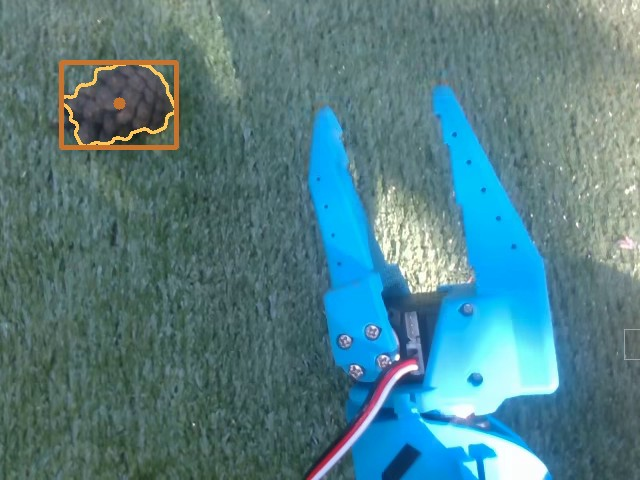
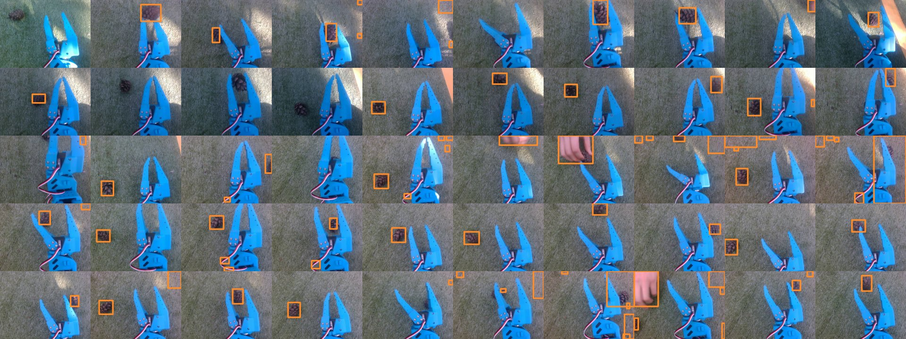
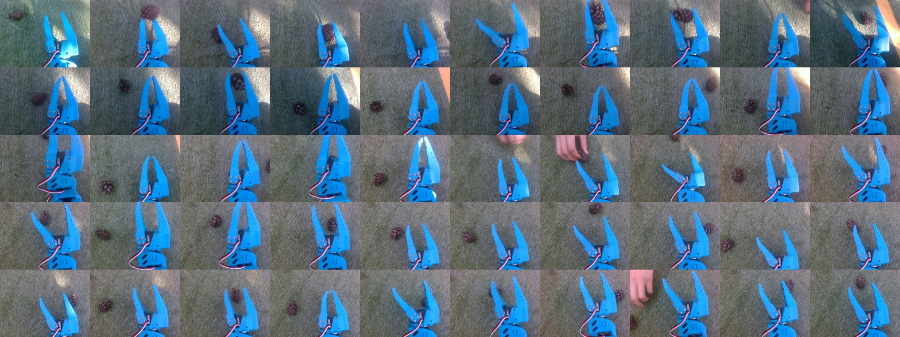
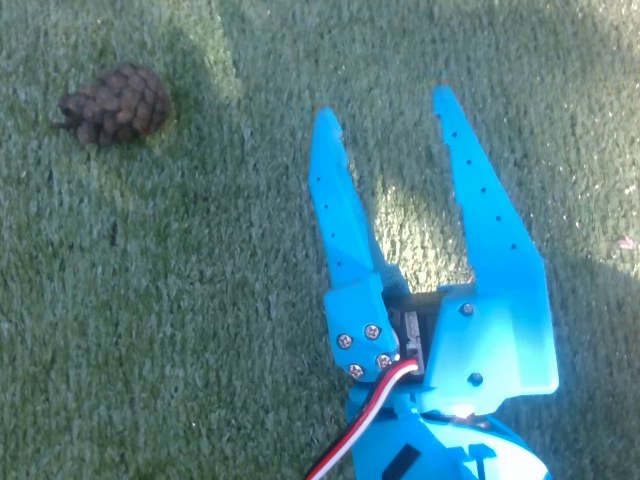
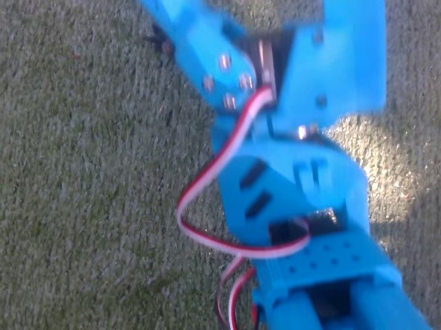
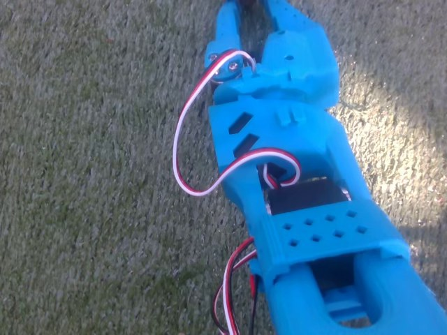
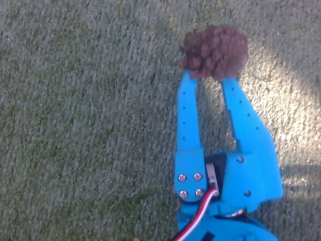

Hackathon 2026 - Pinecone robot
How it sees, measures, drives and learns to grab - explained step by step
Raspberry Pi 5 · SO-101 robot arm · RealSense depth camera · ACT imitation learning · September 2026
Overview
1
See
Finding cones by colour: HSV, masks, morphology and contours
2
Measure
How a depth camera measures distance, and finding the ground with RANSAC
3
Drive
Steering by the image: a P-controller, a state machine and a phone gyro
4
Grab
Teaching the arm by demonstration: the ACT neural network, from data to robot
5
Lessons
What broke, what worked, and what is worth copying
How to read it
Every number is measured, not invented.
Figures come from the team's repo, logs and training runs. Camera frames are real, from the robot's own recordings.
Pinecone robot - how the software works
02
The mission
Spot a pine cone on the grass, drive to it, grab it with the arm and drop it in a jar - with nobody at the controls.
Cones start within a metre of the robot
Artificial grass, so the ground is close to a plane
Leaves, sticks and cables are left for later
The robot carries its own bin and drops cones in it
Five people, one robot: every work session wrote down what it did in STATUS.md and LOG.md, so the next person could pick up where it stopped.
Pinecone robot - how the software works
03
Hardware
Solid line = cable · dashed = WiFi
RealSense D435
Colour + depth camera, USB 3, mounted on the arm
SO-101 arm
6 Feetech STS3215 servos on one USB serial bus
Xiao RP2040 + hoverboard
Text commands a<speed> b<steer>; stops after 500 ms of silence
Raspberry Pi 5
8 GB, runs everything on the robot. No GPU.
Phone gyro
phyphox app streams rotation rate over WiFi
Laptop, RTX 3070
Trains the AI model; SSH over a phone hotspot
Leader arm
A second SO-101, moved by hand to teach
Pinecone robot - how the software works
04
Software
Only the grab uses machine learning. Everything else is classic, readable Python.
| Layer | What it does | Where to look in the repo |
|---|---|---|
| See | Colour threshold finds cone-shaped blobs | pinecone_bot/detector.py |
| Measure | Depth per cone; ground-plane scanner | pinecone_bot/vision_feed.py, scan_cones.py |
| Drive | P-controller + state machine | pinecone_bot/brain.py |
| Heading | Phone gyro → which way the robot faces | pinecone_bot/heading.py, turn_loop.py |
| Grab | ACT neural network, then a recorded jar motion | tools/act_pick.py, motions/sloik.json |
| Control | Web panel, live camera, big STOP button | tools/robot_panel.py, web_control.py |
Pinecone robot - how the software works
05
01 - See
A camera gives each pixel red, green and blue. Each one mixes colour with brightness, so a shadow changes all three.
HSV pulls them apart:
H
Hue - which colour, as an angle round the colour wheel
S
Saturation - how strong the colour is (0 = grey)
V
Value - how bright it is (0 = black)
OpenCV gotcha: hue runs 0-179, not 0-359, so it fits in one byte. Halve the angle from any colour picker.
Hue in OpenCV
0
30
60
90
120
150
179
Measured on a real frame (median)
| H | S | V | |
|---|---|---|---|
| Cone | 123 (87-150) | 25 | 83 |
| Grass | 83 | 71 | 99 |
| Gripper | 98 | 247 | 243 |
Brown is dark and washed-out: across one cone the hue swings from 87 to 150. Saturation and value carry much of the signal.
Pinecone robot - how the software works
06
01 - See
1 · Camera frame
Real frame from the arm camera, 640 x 480

2 · Threshold
Keep pixels inside the HSV box: 74 separate blobs

3 · Open, then close
Specks gone, holes filled: 2 blobs left

4 · Filter by size
One blob of 6,313 px survives: the cone
Threshold here: any hue, saturation 0-50, value 20-110, hand-tuned for this sunny frame to show the steps. Blur (5 px), brush (9 px ellipse) and size filter (400-40,000 px) are the team's settings from pinecone_config.json.
Pinecone robot - how the software works
07
01 - See
Opening = erode, then dilate
Shrink every white region by the brush, then grow it back. Specks smaller than the 9 px brush never return.
Closing = dilate, then erode
Grow, then shrink. Small holes inside the cone fill in and stay filled.
Trace the outline of every white region, then measure its area.
Keep 400-40,000 px. A hand has cone-like colour but covers 9,000-31,500 px.
Sort by how low the blob sits. Flat ground + camera looking down: lower = nearer.
A blob touching the top or side edge has a fake centre: use it for direction only.
Pinecone robot - how the software works
08
01 - See

The team's threshold on the first frame of all 50 recorded grabs. Most boxes sit on cones; misses come from hands, deep shade and cut-off edges.
28 / 50
frames give exactly one blob with the team's threshold, tuned and checked on 38 frames in two lights
5 / 50
with the threshold tuned on the single sunny frame from two slides back
The first rule split by brightness (V < 95) and failed all 18 check frames in the second light.
Pinecone robot - how the software works
09
02 - Measure
far cone: rays almost parallel, small shift
near cone: wide angle, big shift
left IR camera
right IR camera
baseline b, about 5 cm
Two infrared cameras sit a few centimetres apart. Each sees the cone at a slightly different spot in its image.
Z = f × b / d
Z distance · f focal length in pixels · b gap between the cameras · d shift between the two images (disparity)
Near things shift a lot, far things barely move. A laser projector sprays invisible dots so even plain grass has texture to match.
Pinecone robot - how the software works
10
02 - Measure
1
Line up depth with colour
The camera aligns the two streams, so pixel (x, y) is the same ray in both.
2
Take a small patch
A 9 x 9 pixel square around the cone's centre: 81 depth readings.
3
Use the median
Skip zeros (no reading), sort the rest and take the middle value.
patch = depth_m[y-4:y+5, x-4:x+5]
good = patch[patch > 0]
return float(np.median(good))
Simplified from depth_at() in pinecone_bot/vision_feed.py
Why the median? A worked example
0 · 0.62 · 0.63 · 0 · 0.63
0.64 · 0.63 · 0.90 · 0.62
Drop the zeros and sort:
0.62 0.62 0.63 0.63 0.63 0.64 0.90
0.63 m
median
0.67 m
average
One stray reading (0.90, grass behind the cone's edge) drags the average; the median ignores it. Illustrative numbers.
Pinecone robot - how the software works
11
02 - Measure
stray points: outvoted
cone: sticks out above the plane
ground points within 1 cm (inliers)
Free sanity check: the plane's distance from the camera IS the camera height (7.5 cm). A wrong value means it fitted a wall or a desk - this caught a moved camera twice.
1
Depth → 3D points
6,000 random points per fit
2
Pick 3 random points
three points define a plane
3
Count the supporters
points within 1 cm of that plane
4
Repeat 300 times
keep the best plane, refine it with SVD on all its supporters
5
Look above the plane
1.5-40 cm up = an object; size gates keep cone-sized ones
Output per cone: metres forward, metres sideways, angle and grip width - the median of 15 frames, spread under 2 mm.
Pinecone robot - how the software works
12
02 - Measure
0.31 m
closest depth reading at 640 x 480 (measured on the D415). At 424 x 240 it drops to about 0.16 m, so the code uses the lower resolution.
1
Measure early, drive from memory
Scan from 0.3-1.0 m, remember where the cone is, cover the last stretch blind (scan_cones.py).
2
Steer on the image, not on depth
The main stack never needs metres: it drives until the cone sits at a set spot in the frame.
3
Move the camera
Mount it so the grab spot is outside the blind zone. Still an open task.
grab spot, 0.17 m
Pinecone robot - how the software works
13
03 - Drive
err_x = +80 px
err_y = +160 px
target: column 320, row 360
Row 360 was calibrated so a cone there is about 0.33 m ahead - exactly where the recorded grab lands.
err_x = px - 320
err_y = 360 - py
turn w = -0.004 * err_x
speed v = 0.0025 * err_y * max(0, 1 - |err_x| / 80)
err_x = 80, err_y = 160. Turn w = -0.32 toward the cone; speed 0.4 x (1 - 80/80) = 0. It turns on the spot first, and only drives once the cone is roughly centred.
Errors under 3 px are ignored. Done when within 8 px for 3 frames in a row. The loop runs 15 times a second; speed is capped at 0.25, turn at 0.6.
Pinecone robot - how the software works
14
03 - Drive
SEARCH
APPROACH
ALIGN
GRASP
DROP
DONE
RETRY
dropped in the jar: look for the next cone
lost for 2 s
cone moved
90 s, nothing found
gripper empty
back up 1.2 s and try again (2 tries, then search elsewhere)
SEARCH → a cone appears
APPROACH → cone held at the target for 3 frames
ALIGN → still there after stopping
GRASP → the gripper is not empty
Pinecone robot - how the software works
15
03 - Drive
Wheels slip on grass and the motor board was modified, so there is no wheel feedback. Timing alone drifts.
A phone taped flat to the base runs phyphox. The Pi polls its gyroscope over WiFi and adds up rotation rate into a heading. Gaps over 0.5 s are skipped, not guessed.
Measured: no turn at all below a steer of 100-160, a 0.15-0.4 s delay, and the same command gives 0.43-1.08 rad/s. No fixed table can describe that.
Simulation, 15% turn slip
3.5 m
how far off the lane search ends without a heading
0.10 m
with the phone gyro
Phone link verified on the Pi; driving with it not yet tried on grass.
Pinecone robot - how the software works
16
03 - Drive
1
Driving over a laggy hotspot
The web panel ran over a phone hotspot: ping up to 240 ms, lost packets.
2
Heartbeats carried key state
Each keep-alive message also said which keys were held.
3
Late messages arrived in bursts
An old "W held" restarted driving right after the failsafe had stopped it.
4
The robot hit its own arm
The arm was damaged and the Pi dropped off the network.
Root cause
The dead-man switch timed when a message arrived, not when it was sent. A late message looks fresh.
Fixes
Pinecone robot - how the software works
17
04 - Grab
Nobody wrote the grab motion. We showed the arm 50 grabs and a neural network learned to copy them.
04 - Grab
Try 1
Record a grab by hand, play it back.
Works only if the cone is exactly where it was when recorded
Try 2
Fit a simple linear model from where the cone appears to the joint angles, from 8 hand-taught grabs.
About 6 cm off: 0 of ~15 grabs worked
Try 3
Compute joint angles from the arm's 3D model.
The model's jaw height near the ground was off by up to 5 cm; weak servos add 2-4° of error
Each approach needed an exact model of a messy, real arm. Imitation learning skips the model: it learns the mapping straight from examples.
Pinecone robot - how the software works
19
04 - Grab
Collect
by hand, like a puppet
Collect
every servo follows its twin
Collect
camera image + joint angles + the leader's command
Learn
50 grabs of 15 s at 30 fps
Learn
predict the human's next moves from the image and joints
Use
image + joints in → next moves out
It is plain supervised learning: the input is what the robot sees and feels, the label is what the human did next. Also called behaviour cloning.
Pinecone robot - how the software works
20
04 - Grab

The first frame of every grab. Sun, shade, hands and different cone spots: this variety is what lets a model cope with new situations.
50
grabs recorded
5 x 10
cone spots x grabs each
15 s
per grab, at 30 fps
22,451
frames in total
Pinecone robot - how the software works
21
04 - Grab

0.5 s
Start: cone in view, jaws half open

5 s
Reaching: the jaws now block the view

10.5 s
Jaws closed at 10.1 s, cone out of sight below

13 s
Lifted: the cone is held in the jaws
Grab 1 of 50, straight from the dataset. The camera rides on the forearm, so the view swings with every move - and hides the cone just when it matters.
Pinecone robot - how the software works
22
04 - Grab
640 x 480 colour frame from the arm camera
where each joint is now: shoulder pan and lift, elbow, wrist flex and roll, gripper
where the leader says each joint should go. This is the label the model learns to predict.
Grab 1: three of the six action signals (degrees)
gripper (0-100)
elbow
wrist flex
50
0
-50
-100
-150
0 s
5 s
10 s
15 s
jaws open, 2.6 s
jaws close, 10.1 s
Pinecone robot - how the software works
23
04 - Grab
Camera image
480 x 640
ResNet18
11.2M params → 15 x 20 = 300 tokens
Joint angles
6 numbers
Linear layer
→ 1 token
Style z
32 numbers, 0 at run time
Linear layer
→ 1 token
Transformer encoder
4 layers, 8 heads, width 512. All 302 tokens look at each other. 17.3M params
Decoder
1 layer, 100 query slots - one per future step. 5.4M params
Action head
100 steps x 6 joint targets = the next 3.3 s of motion
51.7M parameters in total. 17.4M of them (the style encoder) are only used in training, so 34.2M run on the Pi.
Pinecone robot - how the software works
24
04 - Grab
one move at a time: small errors pile up and miss
missed
target
target
chunks: plan a smooth stretch, look, re-plan
Look
camera frame + joint angles
Think
0.65 s on the Pi's CPU
Play
100 moves = 3.3 s at 30 fps
Repeat
a 15 s grab is 4-5 chunks
This model plays each whole chunk. ACT can also blend overlapping chunks (temporal ensembling) for smoother motion - switched off here.
Pinecone robot - how the software works
25
04 - Grab
Training
Real 100 moves
and joint angles
Style encoder
training only, 17.4M
Style z (32 numbers)
HOW it was done
ACT rebuilds moves
from image + joints + z
Running on the robot
z = 0
the average, most typical style
ACT
image + joints + z
Next 100 moves
one consistent grab
People never grab the same way twice. Averaging two different grabs gives a motion that reaches for the middle and misses.
L1: how far predicted moves are from the human's. KL: keeps styles tidy around 0. At step 7,000: 0.301 = 0.198 + 10 x 0.010.
Pinecone robot - how the software works
26
04 - Grab
x
layers
shortcut: x skips the layers
output = layers(x) + x
Deep networks used to get worse as layers were stacked: the learning signal faded on its way back. Shortcuts let each block learn only a small correction on top of its input.
1.28 million labelled photos, 1,000 classes. It already knows edges and textures; 50 grabs only fine-tune it.
The smallest ResNet: 11.2M parameters, light enough for a Raspberry Pi CPU.
Images, joints and actions are rescaled to mean 0, spread 1, so no signal drowns out the rest.
Random brightness, contrast and hue changes were off. Turning them on is a cheap fix for sun and shade.
Pinecone robot - how the software works
27
04 - Grab
Setup
AdamW, learning rate 0.00001, weight decay 0.0001, gradients clipped at 10, batch of 8
How much
7,000 steps x 8 = 56,000 samples: about 2.5 passes over the 22,451 frames
Hardware
RTX 3070 laptop GPU, mixed precision, ~3 steps/s: about 40 minutes of compute
Real life
A checkpoint every 1,000 steps. One overheating crash, resumed from step 3,000
Training loss at saved checkpoints (it started at 26)
1.24
0.79
0.58
0.30
step 2,000
step 3,000
step 4,000
step 7,000
This is training loss. There is no held-out test set: the real exam is the robot.
Pinecone robot - how the software works
28
At run time
Stage 1 - learned
lerobot-rollout runs ACT on the Pi CPU for 15 s: reach, close, lift. Motors stay on so the cone stays put.
Stage 2 - recorded
A hand-recorded path over the jar, then open the jaws. The jar never moves, so nothing to learn.
Stage 3 - recorded
The arm returns to its start pose, ready for the next cone.
One button in the web panel
"Collect cone" runs tools/act_pick.py and shows the arm camera live. STOP (space bar) kills the whole process group, AI included.
Pinecone robot - how the software works
29
04 - Grab
| Limit | What to try |
|---|---|
| No success check: the jar motion runs even with empty jaws | Read the gripper after closing; the older stack already flags below 6 as empty |
| Only 5 cone spots in training | Record more spots and more varied demos |
| One camera on the forearm: the jaws hide the cone at the end | Add a fixed overhead camera; LeRobot accepts several |
| No image augmentation | Switch on LeRobot's image transforms for sun and shade |
| Only training loss so far | Run act_pick.py --skip-drop with a hand on STOP and count successes |
Pinecone robot - how the software works
30
Status
As recorded in the repo's STATUS.md on 27 September 2026.
Pinecone robot - how the software works
31
05 - Lessons
Minimum depth, turn response, camera height: every number in the config came from a measurement.
A threshold tuned on one sunny frame was not clean on 45 of 50 other frames.
Auto white balance and exposure quietly move colours from frame to frame.
Time-stamp every command. On a laggy link, late messages look fresh.
The full loop collected 5 of 5 cones in simulation, backed by 300+ automated tests.
When no simple model fits the real arm, learn the mapping from demonstrations.
Pinecone robot - how the software works
32
05 - Lessons
| HSV | Colour as hue, saturation and value, not red, green, blue |
| Morphology | Grow and shrink mask regions to drop specks or fill holes |
| Disparity | How far a point shifts between two cameras; bigger = closer |
| RANSAC | Fit to random minimal samples, keep the best-supported one |
| Visual servoing | Steer so a target moves to a set spot in the image |
| P-controller | Correction proportional to the error |
| State machine | Fixed modes plus the events that switch between them |
| Behaviour cloning | Supervised learning that copies an expert's recordings |
| Action chunk | A block of future moves predicted at once (here 100) |
| CVAE | Learns a short style code so different demos don't blur together |
Pinecone robot - how the software works
33
05 - Lessons
Papers and docs
In the repo
pinecone_bot/ - detector, controller, state machine, simulator
tools/act_pick.py - the two-stage AI grab
docs/ACT_TRAINING.md - record, train, run: step by step
docs/STATUS.md - what works right now
docs/LOG.md - every session's notes
github.com/TomkeMonke/hackaton
Pinecone robot - how the software works
34